COS426 Assignment 1Image Processing — Batch Mode
Switch to: Interactive Editor
- (0.5) Brush
- (0.0) Brightness
- (0.5) Contrast
- (0.5) Gamma
- (0.5) Vignette
- (2.0) Histogram equalization
- (0.5) Saturation
- (1.5) White balance
- (2.0) Histogram matching
- (1.0) Gaussian
- (0.5) Sharpen
- (0.5) Edge detect
- (1.0) Median filter
- (2.0) Bilateral filter
- (1.0) Sampling
- (0.5) Translate
- (0.5) Scale
- (1.5) Rotate
- (1.5) Swirl
- (1.0) Composite
- (3.0) Morph
- (4.0) Paint-by-numbers
- (1.0) Art Contest
Brush
Brush draws a circle at the point of a mouse click with a specified color and radius.
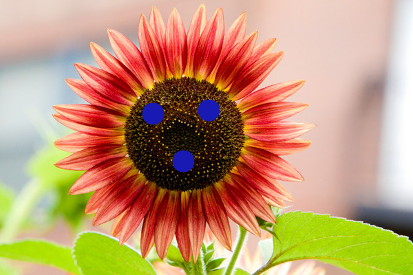
Push_Image=flower.jpg&Brush=16;[0.0968858131488,0.0968858131488,0.705882352941,1];x222y165x303y160x266y234
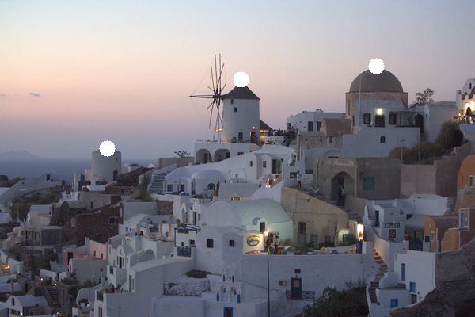
Push_Image=town.jpg&Brush=10;[1,1,1,1];x475y83x304y100x135y187
![Push_Image=flower.jpg&Brush=16;[0.0968858131488,0.0968858131488,0.705882352941,1];x222y165x303y160x266y234](batch.html?Push_Image=flower.jpg&Brush=16;[0.0968858131488,0.0968858131488,0.705882352941,1];x222y165x303y160x266y234){kind=link}
![Push_Image=town.jpg&Brush=10;[1,1,1,1];x475y83x304y100x135y187](batch.html?Push_Image=town.jpg&Brush=10;[1,1,1,1];x475y83x304y100x135y187){kind=link}
Brightness
This feature was implemented by the course staff. I used it as an example of how to loop over the pixels in an image.
Here is an example output where the image is made brigher with the luminance slider set to 0.3:
{kind=link}

Here is an example output where the image is made darker with the luminance slider set to -0.5:
{kind=link}

I did not encounter any particular challenges in implementing this.
Contrast
Makes dark pixels darker and brighter ones brighter.
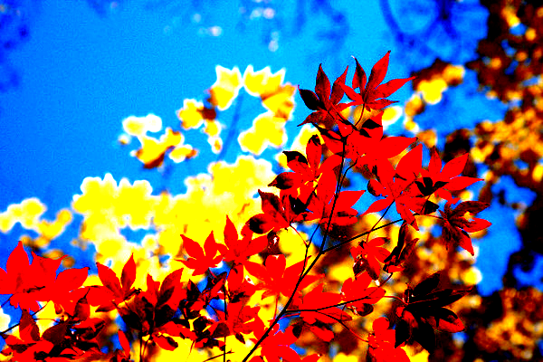
Push_Image=leaves.jpg&Contrast=0.7
Push_Image=leaves.jpg&Contrast=-0.8
Push_Image=leaves.jpg&Contrast=-1
{kind=link}
{kind=link}
{kind=link}
Gamma
Adjusts the colors of an image in a nonlinear fashion. Originally used to deal with physical restrictions in capturing and displaying images.
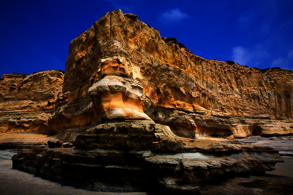
Push_Image=mesa.jpg&Gamma=1
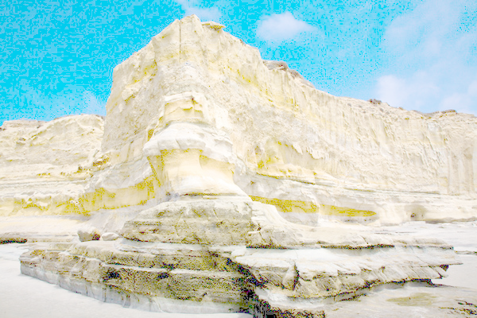
Push_Image=mesa.jpg&Gamma=-1.6
{kind=link}
{kind=link}
Vignette
This darkens the periphery of the image but keeps the inside normal brightness. The inside of the inner circle in unchanged while the outside of the larger circle is black.
Push_Image=mesa.jpg&Vignette=0;0
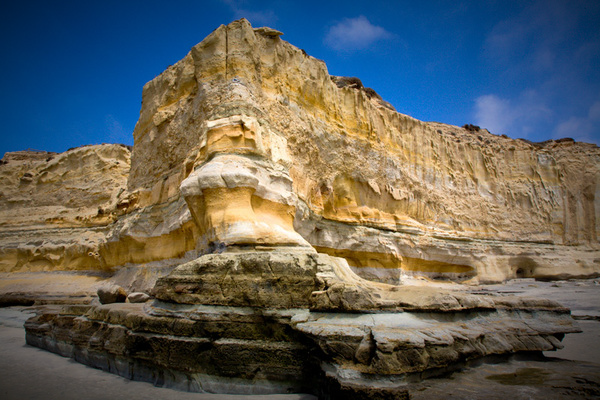
Push_Image=mesa.jpg&Vignette=0.25;1
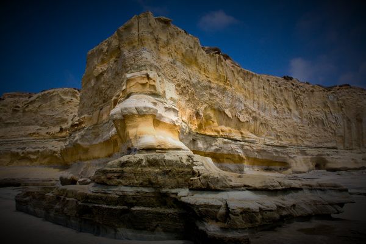
Push_Image=mesa.jpg&Vignette=0;0.75
{kind=link}
{kind=link}
{kind=link}
Histogram equalization
Splits the image into bins based on luminance and adjusts the luminances to make the image have a flat histogram. Each luminance value is equally represented in the final image.
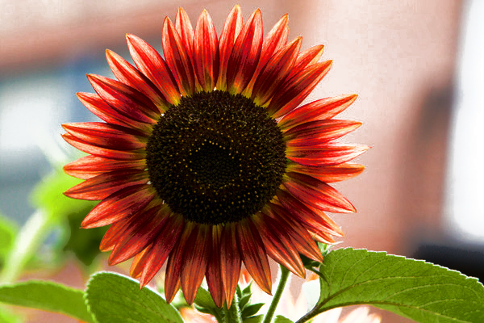
Push_Image=flower.jpg&Histogram_Equalization=
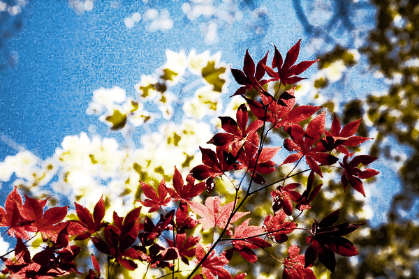
Push_Image=leaves.jpg&Histogram_Equalization=
{kind=link}
{kind=link}
Saturation
Interpolates, (and extrapolates) an image with a greyscale version of itself. This can either increase the saturation of the colors or dull them closer to grey.
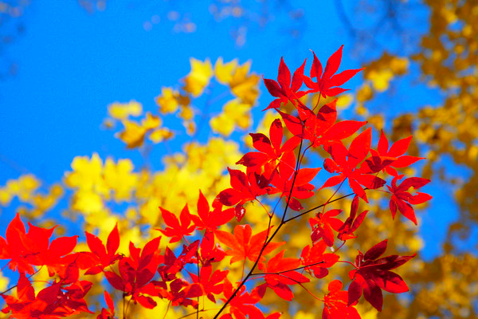 Push_Image=leaves.jpg&Saturation=1
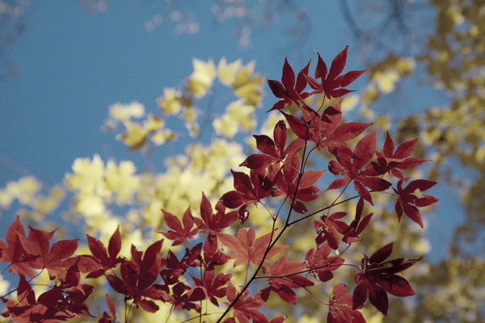
Push_Image=leaves.jpg&Saturation=-0.5
{kind=link}
{kind=link}
White balance
Adjusts the colors so a given color is remapped to white (using lms color space).
Push_Image=town.jpg&White_Balance=[0.5,0.5,0.5,1]
![Push_Image=town.jpg&White_Balance=[0.5,0.5,0.5,1]](batch.html?Push_Image=town.jpg&White_Balance=[0.5,0.5,0.5,1]){kind=link}
Histogram matching
Splits the two images into "bins" by color (rgb) and adjusts the colors of the second image to match the histogram of bins of the first image.
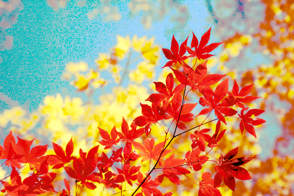
Push_Image=leaves.jpg&Push_Image=flower.jpg&Histogram_Match=0.5
{kind=link}
Gaussian
Blurs pixels with it's neighbors according to a gaussian function based on distance, so pixels further out matter less. Works with two one dimentional convolutions to be more efficient.
Push_Image=leaves.jpg&Gaussian=4
Push_Image=man.jpg&Gaussian=7
{kind=link}
{kind=link}
Sharpen
Enhances edges of an image. Works with a two-dimentional convolve matrix that results in a large value when a pixel is different from it's neighbors, and a low value otherwise. The matrix is like an edge matrix that adds on top of the original image.
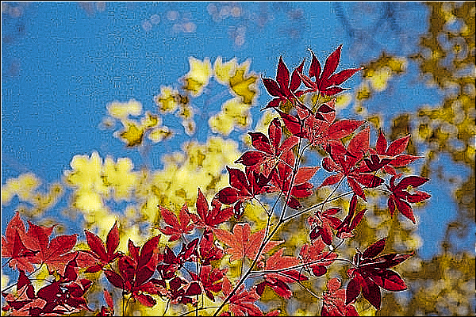
Push_Image=leaves.jpg&Sharpen=
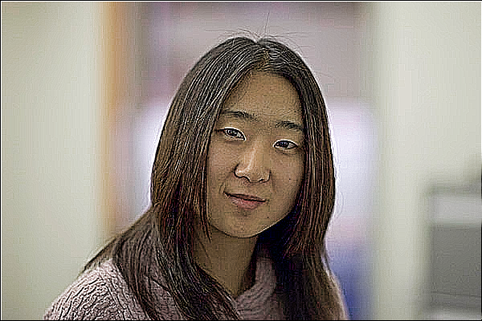
Push_Image=woman.jpg&Sharpen=
{kind=link}
{kind=link}
Edge detect
Finds edges where color changes quickly. Works with a two-dimentional convolve matrix that results in a large value when a pixel is different from it's neighbors, and a low value otherwise. The sum of the matrix is zero.
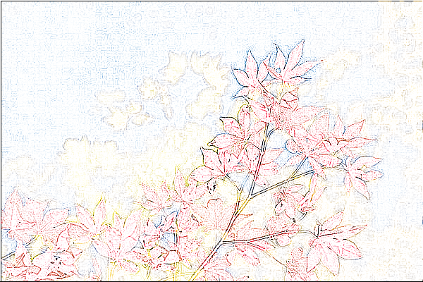
Push_Image=leaves.jpg&Edge=
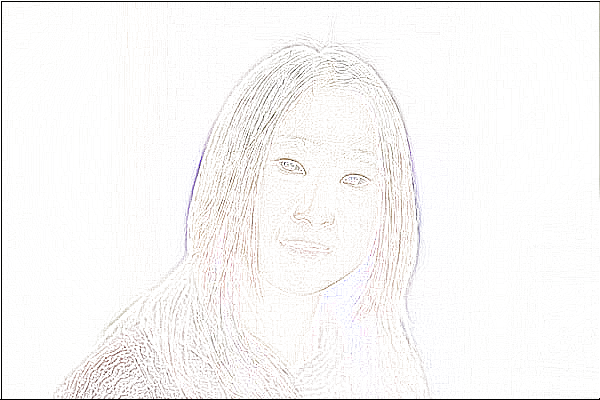
Push_Image=woman.jpg&Edge=
{kind=link}
{kind=link}
Median filter
Changes the value of a pixel to be the median of values within a given window. This removes noise.
Push_Image=leaves.jpg&Median=2
Push_Image=leaves.jpg&Median=3
Push_Image=leaves.jpg&Median=5
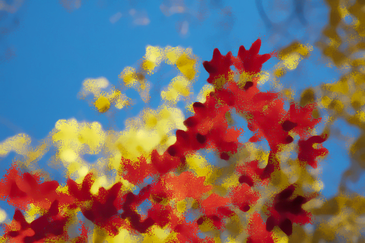
Push_Image=leaves.jpg&Median=6
{kind=link}
{kind=link}
{kind=link}
{kind=link}
Bilateral filter
A type of gaussian blur that preserves edges. It works by weighting pixels of a similar luminance higher than pixels with different luminance in a gaussian manner. Distance is taken into account too like a normal gaussian filter.
This runs slow on my computer. The second image is a screenshot from Microsoft Edge (where it runs faster, but has no ability to save the image directly).

Push_Image=mesa.jpg&Bilateral=4;2

Push_Image=mesa.jpg&Bilateral=5;3
{kind=link}
{kind=link}
Sampling
There are three ways to sample. The naive way is "point", which just rounds the desired location to the closest pixel. This is bad because there is no band limiting so high frequency information can show up as low frequency information.
The second way is "billateral", which averages the four nearest pixels. This is better, but it is still possible to have the sample dominated by one pixel if that's where the location is closest. This can be a problem when scaling for the same reasons "point" is bad.
The third way is gaussian, which takes a gaussian weighted average of nearby pixels, this is better for bandlimiting the information and removing high frequency information.
Translate
Moves an image.
Push_Image=flower.jpg&Translate=-317;-182;point
Push_Image=flower.jpg&Translate=-317;-182;bilinear
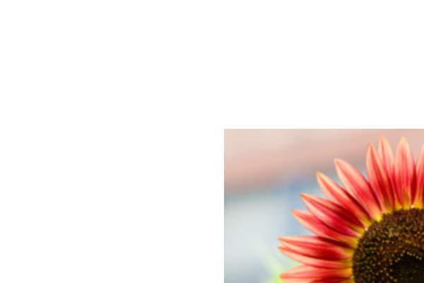
Push_Image=flower.jpg&Translate=-317;-182;gaussian
{kind=link}
{kind=link}
{kind=link}
Scale
Shrinks or grows an image.
Push_Image=mesa.jpg&Scale=2.03;point
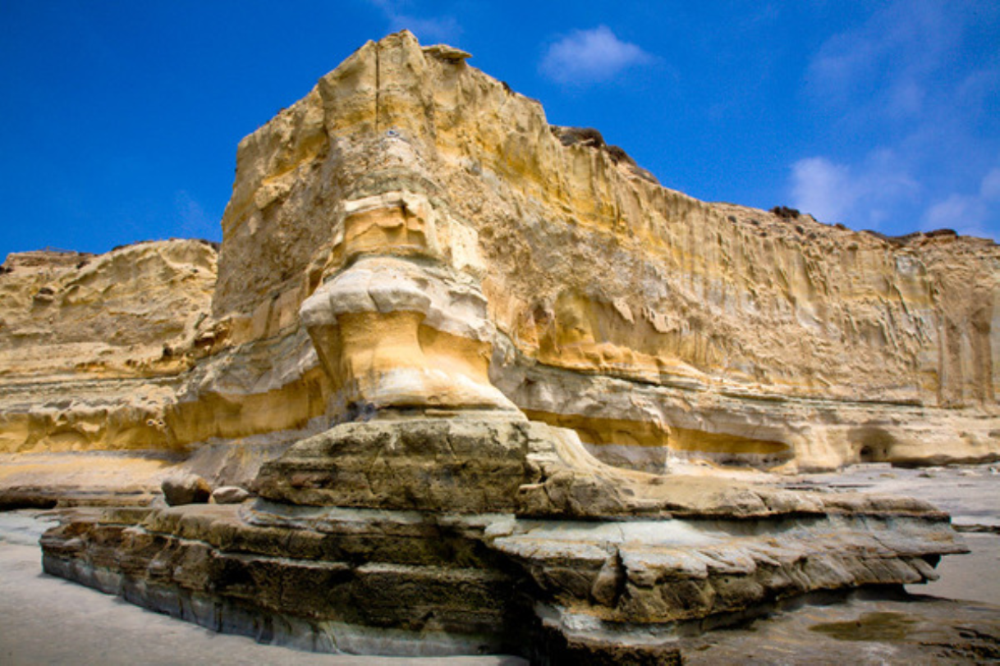
Push_Image=mesa.jpg&Scale=2.03;bilinear
 Push_Image=mesa.jpg&Scale=2.03;gaussian
Push_Image=mesa.jpg&Scale=2.03;gaussian
{kind=link}
{kind=link}
{kind=link}
Rotate
Rotates an image.
Push_Image=mesa.jpg&Rotate=0.628318530718;point
Push_Image=mesa.jpg&Rotate=0.628318530718;bilinear
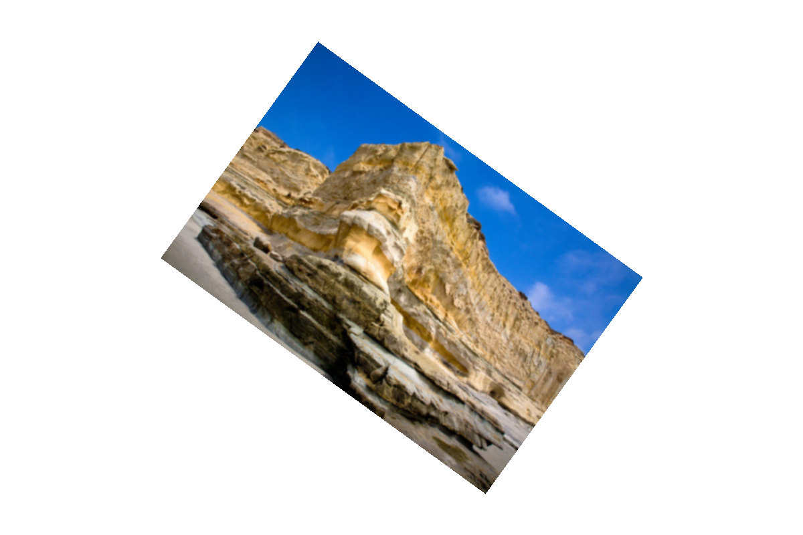
Push_Image=mesa.jpg&Rotate=0.628318530718;gaussian
{kind=link}
{kind=link}
{kind=link}
Swirl
Rotates the outside of an image more than the inside to give a neat effect.
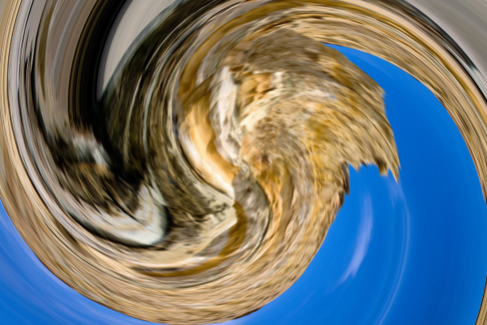
Push_Image=mesa.jpg&Swirl=6.28318530718;gaussian
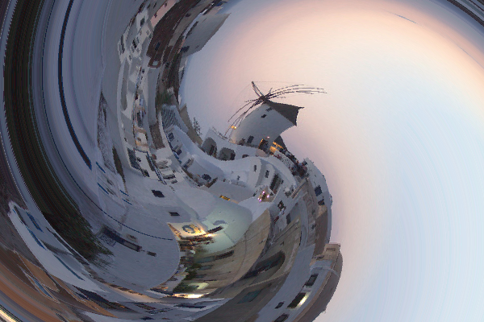
Push_Image=town.jpg&Swirl=4.71238898038;point
Push_Image=town.jpg&Swirl=4.71238898038;bilinear
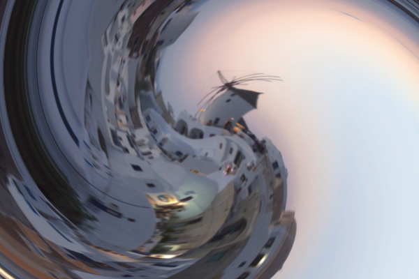
Push_Image=town.jpg&Swirl=4.71238898038;gaussian
{kind=link}
{kind=link}
{kind=link}
{kind=link}
Composite
Blends images based on alpha channel with a background and foreground image.
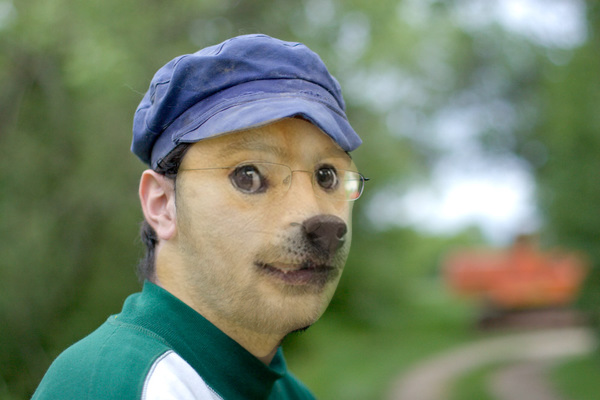
Push_Image=man.jpg&Push_Image=doge.jpg&Push_Image=alpha.png&Get_Alpha=&Composite=
{kind=link}
Morph
Changes an image shape to match another image (using user selected lines), while blending the colors of the two images together.
Push_Image=chang.jpg&Push_Image=halber.jpg&Morph=(0,1,0.1)
){kind=link}
Paint-by-numbers
This is a much simpler version of what is in the paper. It randomly draws circles of random sizes on the image and blends the circles together. The circles are smaller near an edge to help preserve them.
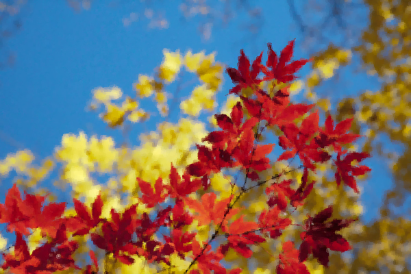
Push_Image=leaves.jpg&Paint=0.2
{kind=link}
Art Contest
A poor implentation of the edge filter.
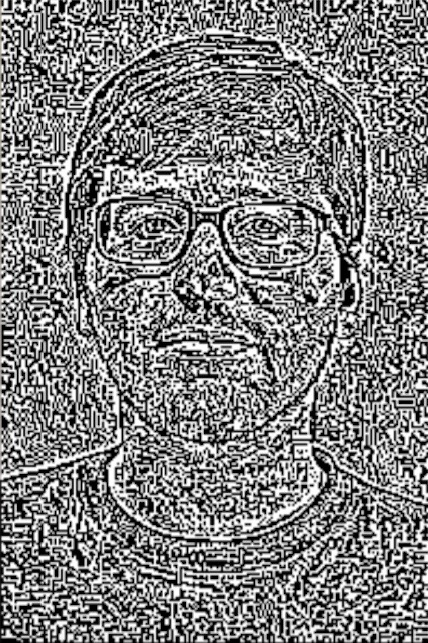